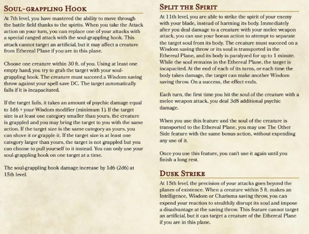
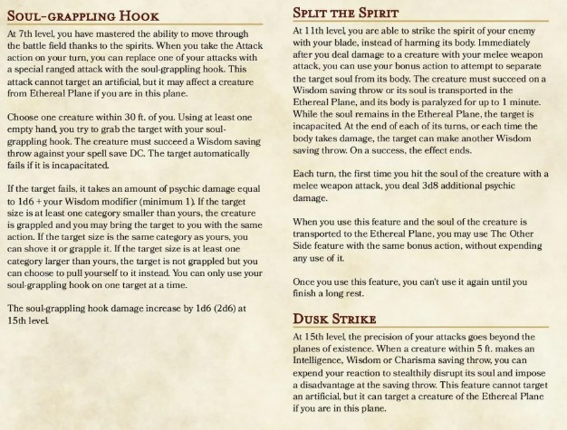

Overview
Name: Theodara Elarocen
Race: Human
Class: Death Walker
Alignment: Chaotic Neutral
Background: TBD
Ability Scores
- Strength: 17 (+3)
- Dexterity: 12 (+1)
- Constitution: 16 (+3)
- Intelligence: 12 (+1)
- Wisdom: 16 (+3)
- Charisma: 10 (+0)
Senses
- Passive Perception: 12
- Passive Investigation: 13
- Passive Insight: 12
- Darkvision 60ft
Backstory
Theodara Elarocen is the matriarch of the Elarocen Noble Family and is a Death Walker. She is a well known member of the community of Gravemarch and its surrounding villages. People have always spoken
highly of her and her willingness to help people. She has spent much of her life building the Elarocen name and making sure people see it as a healing entity within Gravemarch. A place for the hopeless and
a beacon for the sad.
Theodara grew up in Rookstead as the Elarocen Noble family held a property there. She spent her younger years studying the white elements of necromantic magic. She wanted to become a healer and ultimately a protector of the people following in the Paladin like
footsteps that her mother had laid before her. Although as she got older, her abilities grew darker and forced her to study the black necromantic magic as well. It was then in her teen years were she discovered
her abilities were that of death walkers. An uncommon gift usually passed from parent to child. Her father had died in the War of Ancients and later discovered a secret journal her father had kept detailing
his life's work as a death walker.
Theodara then began learning her abilities and how to best utilize all her gifts and fully embraced the way of the death walkers. Not many death walkers are human and not many are living beings. However, she enjoyed
walking between life and death where no one could follow. She then attended Mortalis Collegium and became popular with the younger crowds. Elric wasn't originally a part of the Noble families yet his blood was from the
Carthraven Bloodline. So the two met at school and studied together. With them both being different than many other necromancer's, they bonded and never let go of one another.
They married a year later and made their residence in the Elarocen home. Theodara took every opportunity she could to work with the people of Gravemarch and the surrounding villages to enlighten people about
magic including light and dark aspects. Showing people that they didn't need to fear necromancy and offered it as another pathway for life. Eventually, along came Cienna Elarocen, her daughter, and then Lucien
Elarocen, her son. The apples of her eyes. To her there was nothing greater than being a mother. She loved letting her children grow up in a world away from prejudice and hate. She made it so that even though
they had responsibilites as the Elarocen Noble family and would for the rest of their lives, that they always had a choice how they wanted to conduct their lives.
When the disapperances and murders around Gravemarch began, she quickly became the pillar everyone looked to amongst Elric and Mayford and Alice Anthorpe. Together, their houses held the most power not just in
politics, but also in physical magically ability. She worked hard with everyone in the Noble circle and Alexsander Riddick to prepare Gravemarch for the worst. It was seemingly not enough as the Noble families
have taken great losses when it comes to losing their own. Theodara works closely with Devilayne since the near complete annihilation of the Anthorpe family trying to garner what magic they have to thwart this
evil.
After the discovery of a phylactery in The Dark realm alongside Alexsander and Devilayne, they called a meeting to discuss what this could mean and how to deal with the impending danger. The murders became more
brutal and the displays of gore weren't stomached any longer. She had touched the vicous vines and seemingly was infected with a very dark, dangerous piece of magic. It eventually consumed her mortal body and
transported. Upon being rescued by her son, her daughter, Arifel, and Flux, her ghost remained in the world and she was still a powerful death walker.
At the brutal kidnapping of Cienna, Theodara followed in the footsteps of the events and went to try and save Elric from turning into a Harbinger. Her attempts failed and unable to bring him back, she leapt into
the Harbinger soul and destroyed him from the inside out. Thus, sacrificing her soul to end a powerful being, and destroys both her and Elric's souls. Theodara was able to reach Arifel in a final moment, 'Please take
care of my children. Be what we can no longer be.' Her and Elric's cloaks rematerialized with a pocket of their power still clinging to them.
Everyone in Gravemarch feels her loss. What she did, not many could have done. And to this day, there is a beautifully crafted tombstone with her and her husbands name carved deep into the stone sporting the all to familiar
silver and green from their sigil. It stands tall and no amount of time will chip away at that memory.
Death Walker Abilities
 
